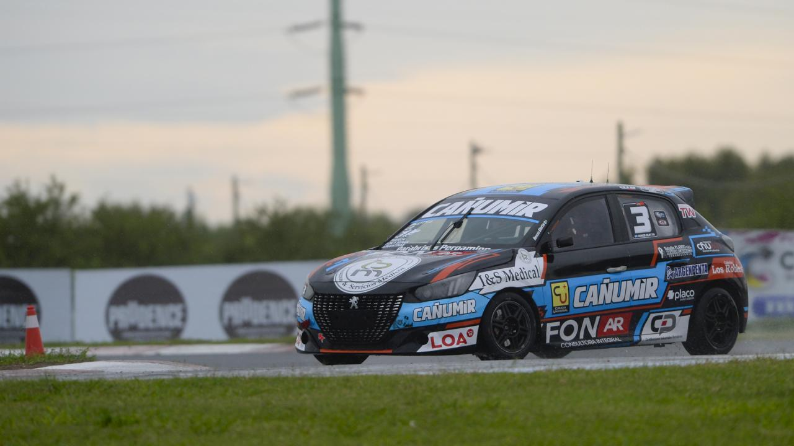

Renzo Blotta sumó fuerte en Rosario y cerró un gran fin de semana bajo la lluvia

Renzo Blotta completó un destacado fin de semana en el Turismo Nacional Clase 2 en Rosario, donde fue protagonista en todo momento y logró cerrar la final en la cuarta posición, en un contexto marcado por la lluvia y las condiciones cambiantes de pista.
La actividad en el autódromo rosarino estuvo atravesada por la inestabilidad climática, con presencia de lluvia durante distintos momentos del fin de semana, lo que obligó a equipos y pilotos a adaptarse constantemente. En ese escenario, Blotta logró mostrarse firme desde el inicio.
En clasificación, el piloto chubutense se mantuvo entre los más rápidos, logrando posicionarse bien de cara a la serie. Luego, en su batería, volvió a confirmar su buen rendimiento al finalizar en la segunda colocación, manteniéndose dentro del grupo de punta.
Ya en la final del domingo, y con una pista que seguía presentando sectores complicados, Blotta partió desde la quinta posición. A lo largo de las vueltas, se mantuvo siempre en el lote de adelante, en una carrera muy apretada y con diferencias mínimas entre los principales protagonistas.
Con un ritmo competitivo durante toda la final, se mantuvo en el lote de punta y cruzó la bandera a cuadros en la cuarta posición, muy cerca del podio.
La victoria quedó en manos de Lestón Martín, seguido por Exequiel Bastidas y Santino Balerini, en una final que tuvo a los primeros ubicados separados por escasa diferencia.
De esta manera, Blotta se llevó un resultado importante en términos de campeonato, sumando buenos puntos en una fecha que no fue sencilla por las condiciones climáticas y que exigió máxima concentración en cada salida a pista.
En tanto, en la Clase 3, Agustín Canapino se quedó con la victoria, escoltado por Ricardo Risatti y Leonel Pernía, completando un fin de semana de alto nivel para el Turismo Nacional en Rosario.
La próxima fecha del campeonato se disputará el 3 de mayo en el Circuito San Juan Villicum, donde continuará la actividad del Turismo Nacional.